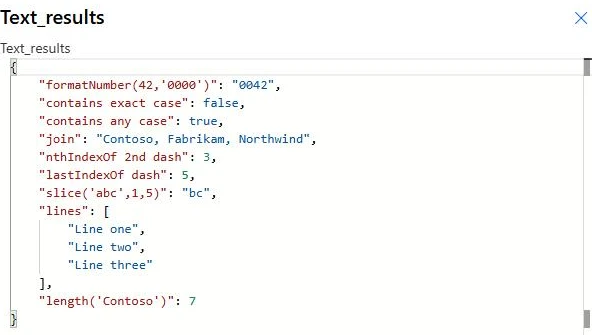

- Power Automate
- Level 2 · Working with data · 5 of 7
Text functions: the complete guide
Text arrives messy: codes with parts you need, lists in one cell, line breaks, stray spaces, inconsistent capitals. A small set of functions handles almost all of it, once you know how positions are counted and where each one fails.
| Section | You'll learn |
|---|---|
| 1 · Positions | Counting from 0, with a picture |
| 2 · Splitting and joining | Text ↔ list, including line breaks |
| 3 · Taking part of text | substring vs slice, finding characters |
| 4 · Searching | contains, startsWith, case sensitivity |
| 5 · Cleaning and formatting | trim, case, padding numbers |
| 6 · Real jobs | Email parts, IDs from subjects, templates, URLs |
1 · Positions start at 0
Positions in INV-2026-0042
| 0 | 1 | 2 | 3 | 4 | 5 | 6 | 7 | 8 | 9 | 10 | 11 | 12 |
|---|---|---|---|---|---|---|---|---|---|---|---|---|
| I | N | V | - | 2 | 0 | 2 | 6 | - | 0 | 0 | 4 | 2 |
substring(text, 4, 4) starts at position 4 and takes 4 characters: 2026. length is 13; the last position is 12.
2 · Splitting and joining
split turns text into a list at a separator; join turns a list back into text.Splitting an email address
split(…, '@') → ["alex.johnson","contoso.com"]The Text scope: lists
| Expression | Result |
|---|---|
join(createArray('Contoso','Fabrikam','Northwind'), ', ') | "Contoso, Fabrikam, Northwind" |
split(text, decodeUriComponent('%0A')) on 3 lines | ["Line one","Line two","Line three"] |
split('Contoso; Fabrikam', ';') | ["Contoso"," Fabrikam"] leading space |
split('Contoso; Fabrikam', '; ') | ["Contoso","Fabrikam"] |
A line break can't be typed into an expression. decodeUriComponent('%0A') produces one; use '%0D%0A' for text from Windows systems.
3 · Taking part of the text
| Expression | Result | Note |
|---|---|---|
substring('INV-2026-0042', 4, 4) | 2026 | start, length |
slice('INV-2026-0042', -4) | 0042 | negative = count from the end |
slice('abc', 1, 5) | bc | end past the text: no error |
substring('abc', 1, 5) | fails | past the end: error |
indexOf('INV-2026-0042', '-') | 3 | first match; -1 if none |
lastIndexOf('A-B-C-D', '-') | 5 | last match |
nthIndexOf('A-B-C-D', '-', 2) | 3 | the 2nd match |
length('Contoso') | 7 | characters |
The template language function 'substring' parameters are out of range: 'start index' and 'length'
must be non-negative integers and their sum must be no larger than the length of the string.substring or slice?
slice(text, start, end): end position, never failssubstring(text, start, length)4 · Searching: mind the capitals
Is “inv-” in “Invoice INV-42 attached”?
| Expression | Result |
|---|---|
contains('Invoice INV-42 attached', 'inv-') | false |
contains(toLower('Invoice INV-42 attached'), 'inv-') | true |
startsWith('RE: Order 101', 'RE:') | true |
endsWith('report.pdf', '.pdf') | true |

contains, indexOf, replace, startsWith and endsWith are all case-sensitive. Lower both sides when case doesn't matter.
5 · Cleaning and formatting
| Expression | Result |
|---|---|
trim(' contoso ltd ') | "contoso ltd" |
toUpper(…) / toLower(…) | "CONTOSO LTD" |
concat(toUpper(substring('alex',0,1)), substring('alex',1)) | "Alex" |
formatNumber(42, '0000') | "0042" padded |
replace('Order 101 is late', 'late', 'on time') | "Order 101 is on time" |

6 · Real jobs
Pull 1042 out of “RE: Request REQ-1042 needs review”
split(subject, 'REQ-') → ["RE: Request ","1042 needs review"]last(…) → "1042 needs review"split(…, ' ') → ["1042","needs","review"]first(…) → "1042"
replace(replace('Hello ~Name~, request ~ID~ is ready.', '~Name~', 'Alex'), '~ID~', 'REQ-1042')| Piece | What it does |
|---|---|
inner replace | Fills the name. |
outer replace | Fills the ID. |
uriComponent('Contoso & Co') → Contoso%20%26%20Co, so spaces and & don't break a link or OData filter.
Watch out
- If the separator is missing,
last(split(…))returns the whole text; check withcontainsfirst. - Case-sensitive search misses real matches.
formatNumberreturns text: pad last.
New to this? Start from the basics optional
String: text. Position: characters counted from 0.
Common mistakes
substringon text that can be shorter.- Splitting on
','when the data has', '. - Case-sensitive
containson user text. - Typing
\nfor a new line.